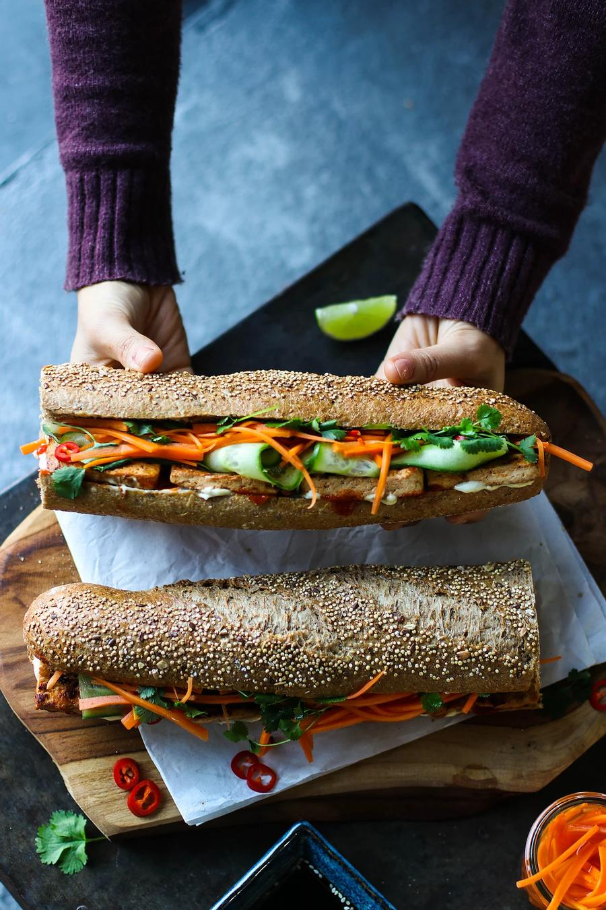

BANH MIH SANDYS

This sandy is a flavour roller coaster. Salty, sweet and spicy, it has it all!!
Bánh mì sandwiches have become all the rage lately, and if you haven't tried it yet, you're in for a treat.
This is our take on the delicious Vietnamese sandwich, and we find the key to making a delicious vegan version is all in the sauce you marinate the tofu in and the crunchy pickled carrots.
Seriously, the pickled carrots are the best part - we wouldn't recommend skipping it.
Serve it with some sweet hoisin sauce on the side, and enjoy!
Ingredients
4 Servings
- 15.8 oz (450 g) extra firm tofu, pressed
- 3 cloves garlic, crushed
- 2 Tbsp (30 mL) sodium-reduced soy sauce
- 2 tsp (10 mL) sriracha hot sauce
- 2 tsp (8 g) granulated sugar
- 1 tsp (5 mL) sesame oil
- ½ lime, juiced
- 2 medium carrots, julienned
- ½ cup (120 mL) boiling water
- ½ cup (120 mL) white vinegar
- 1½ Tbsp (19 g) granulated sugar
- 1 tsp (6 g) salt
- ½ Tbsp (7 mL) vegetable oil
- 2 baguettes
- 2 Tbsp (30 mL) vegan mayonnaise
- 2 tsp (10 mL) sriracha hot sauce
- 1 cucumber, sliced
- 1 red hot chili, thinly sliced
- ½ cup (8 g) fresh cilantro
- 2 Tbsp (30 mL) hoisin sauce
Steps
- Gently squeeze the block of tofu to remove as much liquid as possible, then thinly cut into ¼ inch (½ cm) thick slices.
- To a large shallow dish, add the garlic, soy sauce, Sriracha, sugar, sesame oil, lime juice, and whisk. Then add the tofu to the marinade and gently toss to coat. Set aside.
- To make the pickled carrots, to a mason jar, add the carrots, the boiling water, vinegar, sugar, and salt. Screw on the lid and give it a gentle shake to dissolve the sugar, and let sit while preparing the rest of the recipe.
- To a large pan on medium-high heat, add the vegetable oil and place the tofu slices in a single layer on the pan, cooking for 3 - 5 minutes, or until golden and crispy. Do not disturb the tofu as they cook, as this can cause them to crumble.
- Spoon the leftover marinade over the top of the tofu slices before giving it a flip to cook on the other side for another 3 - 5 minutes.
- Split the baguette down the centre and, if desired, bake in the oven until crispy on the outside.
- Spread on some mayonnaise and hot sauce inside each baguette. Layer on the tofu slices, pickled carrots, cucumber, chili pepper, and cilantro. Serve with hoisin on the side.
SOURCE: https://www.pickuplimes.com/recipe/tofu-vietnamese-sub-b%C3%A1nh-m%C3%AC-81
HOMEPAGE